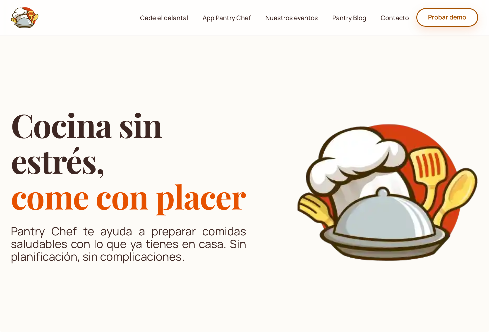

Especialista en Marketing Digital
María de los Reyes Delgado López

Casos de estudio

UI/UX · Maquetación web · Copywriting
Pantry Chef
El ritmo de vida actual deja poco margen para pensar en la cocina. Pantry Chef nace para transformar esa fatiga diaria en una solución rápida, saludable y sin complicaciones para estudiantes y profesionales ocupados.

Sensibilidad estética · Social media · Copywriting estratégico
Petri's Pets
Petri’s Pets es una marca de accesorios de lujo para perros que combina diseño artesanal, ergonomía y materiales premium. Su comunidad, a la que llaman cariñosamente "Petriángeles", busca exclusividad, elegancia y bienestar real para sus mascotas.

Estrategia de contenidos orientada a la conversión
Cubiertas Diansa
Cubiertas Diansa es una empresa andaluza con más de 50 años de experiencia especializada en el diseño, instalación y rehabilitación de cubiertas y cerramientos metálicos industriales. Cuentan con un perfil técnico muy sólido y proyectos de gran envergadura.
Sobre mí
Pasión por el crecimiento sostenible.
Con más de 5 años de experiencia en el sector tecnológico y B2B, me especializo en construir estrategias de marketing digital que conectan marcas con su audiencia ideal de forma eficiente y escalable.
Mi filosofía combina el análisis riguroso de datos con la creatividad táctica. No creo en las fórmulas mágicas, sino en la experimentación constante, la optimización continua y el enfoque en el retorno de inversión real.
Herramientas